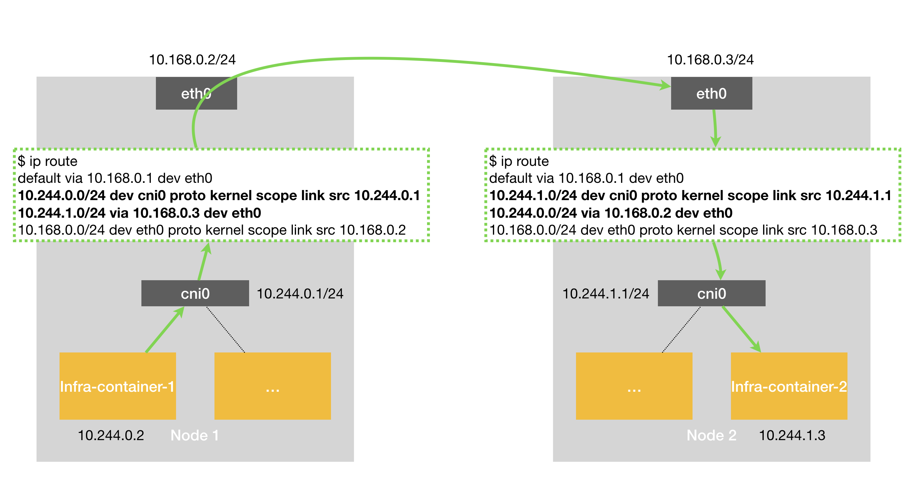
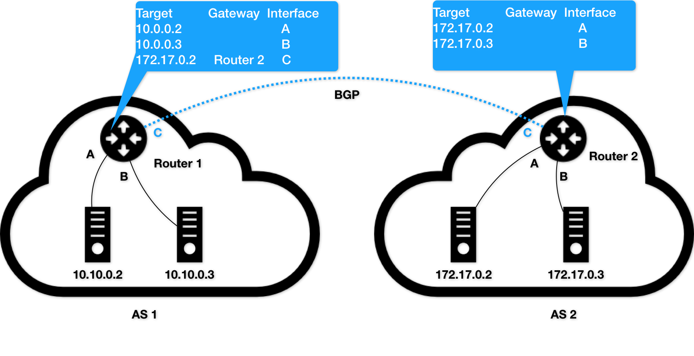
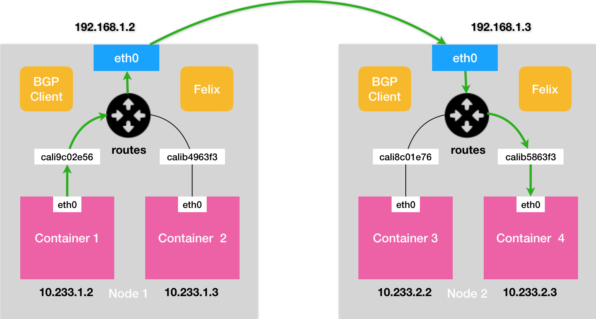
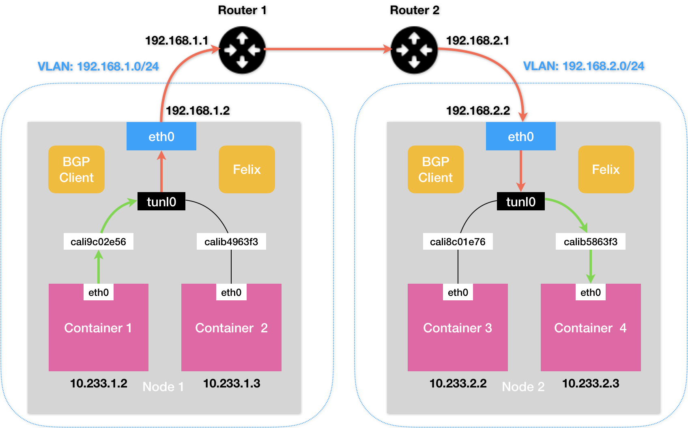
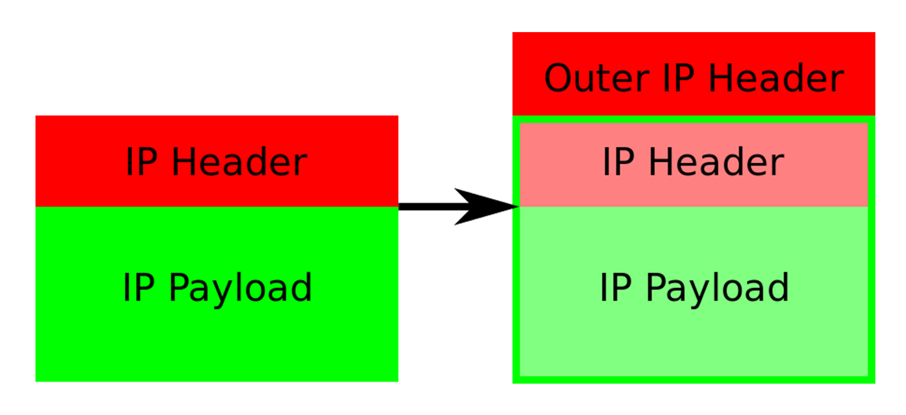

- 00 开篇词 打通“容器技术”的任督二脉.md.html
- 01 预习篇 · 小鲸鱼大事记（一）：初出茅庐.md.html
- 02 预习篇 · 小鲸鱼大事记（二）：崭露头角.md.html
- 03 预习篇 · 小鲸鱼大事记（三）：群雄并起.md.html
- 04 预习篇 · 小鲸鱼大事记（四）：尘埃落定.md.html
- 05 白话容器基础（一）：从进程说开去.md.html
- 06 白话容器基础（二）：隔离与限制.md.html
- 07 白话容器基础（三）：深入理解容器镜像.md.html
- 08 白话容器基础（四）：重新认识Docker容器.md.html
- 09 从容器到容器云：谈谈Kubernetes的本质.md.html
- 10 Kubernetes一键部署利器：kubeadm.md.html
- 11 从0到1：搭建一个完整的Kubernetes集群.md.html
- 12 牛刀小试：我的第一个容器化应用.md.html
- 13 为什么我们需要Pod？.md.html
- 14 深入解析Pod对象（一）：基本概念.md.html
- 15 深入解析Pod对象（二）：使用进阶.md.html
- 16 编排其实很简单：谈谈“控制器”模型.md.html
- 17 经典PaaS的记忆：作业副本与水平扩展.md.html
- 18 深入理解StatefulSet（一）：拓扑状态.md.html
- 19 深入理解StatefulSet（二）：存储状态.md.html
- 20 深入理解StatefulSet（三）：有状态应用实践.md.html
- 21 容器化守护进程的意义：DaemonSet.md.html
- 22 撬动离线业务：Job与CronJob.md.html
- 23 声明式API与Kubernetes编程范式.md.html
- 24 深入解析声明式API（一）：API对象的奥秘.md.html
- 25 深入解析声明式API（二）：编写自定义控制器.md.html
- 26 基于角色的权限控制：RBAC.md.html
- 27 聪明的微创新：Operator工作原理解读.md.html
- 28 PV、PVC、StorageClass，这些到底在说啥？.md.html
- 29 PV、PVC体系是不是多此一举？从本地持久化卷谈起.md.html
- 30 编写自己的存储插件：FlexVolume与CSI.md.html
- 31 容器存储实践：CSI插件编写指南.md.html
- 32 浅谈容器网络.md.html
- 33 深入解析容器跨主机网络.md.html
- 34 Kubernetes网络模型与CNI网络插件.md.html
- 35 解读Kubernetes三层网络方案.md.html
- 36 为什么说Kubernetes只有soft multi-tenancy？.md.html
- 37 找到容器不容易：Service、DNS与服务发现.md.html
- 38 从外界连通Service与Service调试“三板斧”.md.html
- 39 谈谈Service与Ingress.md.html
- 40 Kubernetes的资源模型与资源管理.md.html
- 41 十字路口上的Kubernetes默认调度器.md.html
- 42 Kubernetes默认调度器调度策略解析.md.html
- 43 Kubernetes默认调度器的优先级与抢占机制.md.html
- 44 Kubernetes GPU管理与Device Plugin机制.md.html
- 45 幕后英雄：SIG-Node与CRI.md.html
- 46 解读 CRI 与 容器运行时.md.html
- 47 绝不仅仅是安全：Kata Containers 与 gVisor.md.html
- 48 Prometheus、Metrics Server与Kubernetes监控体系.md.html
- 49 Custom Metrics_ 让Auto Scaling不再“食之无味”.md.html
- 50 让日志无处可逃：容器日志收集与管理.md.html
- 51 谈谈Kubernetes开源社区和未来走向.md.html
- 52 答疑：在问题中解决问题，在思考中产生思考.md.html
- 特别放送 2019 年，容器技术生态会发生些什么？.md.html
- 特别放送 基于 Kubernetes 的云原生应用管理，到底应该怎么做？.md.html
- 结束语 Kubernetes：赢开发者赢天下.md.html
- 捐赠
35 解读Kubernetes三层网络方案
你好，我是张磊。今天我和你分享的主题是：解读Kubernetes三层网络方案。
在上一篇文章中，我以网桥类型的Flannel插件为例，为你讲解了Kubernetes里容器网络和CNI插件的主要工作原理。不过，除了这种模式之外，还有一种纯三层（Pure Layer 3）网络方案非常值得你注意。其中的典型例子，莫过于Flannel的host-gw模式和Calico项目了。
我们先来看一下Flannel的host-gw模式。
它的工作原理非常简单，我用一张图就可以和你说清楚。为了方便叙述，接下来我会称这张图为“host-gw示意图”。

假设现在，Node 1上的Infra-container-1，要访问Node 2上的Infra-container-2。
当你设置Flannel使用host-gw模式之后，flanneld会在宿主机上创建这样一条规则，以Node 1为例：
$ ip route
...
10.244.1.0/24 via 10.168.0.3 dev eth0
这条路由规则的含义是：目的IP地址属于10.244.1.0/24网段的IP包，应该经过本机的eth0设备发出去（即：dev eth0）；并且，它下一跳地址（next-hop）是10.168.0.3（即：via 10.168.0.3）。
所谓下一跳地址就是：如果IP包从主机A发到主机B，需要经过路由设备X的中转。那么X的IP地址就应该配置为主机A的下一跳地址。
而从host-gw示意图中我们可以看到，这个下一跳地址对应的，正是我们的目的宿主机Node 2。
一旦配置了下一跳地址，那么接下来，当IP包从网络层进入链路层封装成帧的时候，eth0设备就会使用下一跳地址对应的MAC地址，作为该数据帧的目的MAC地址。显然，这个MAC地址，正是Node 2的MAC地址。
这样，这个数据帧就会从Node 1通过宿主机的二层网络顺利到达Node 2上。
而Node 2的内核网络栈从二层数据帧里拿到IP包后，会“看到”这个IP包的目的IP地址是10.244.1.3，即Infra-container-2的IP地址。这时候，根据Node 2上的路由表，该目的地址会匹配到第二条路由规则（也就是10.244.1.0对应的路由规则），从而进入cni0网桥，进而进入到Infra-container-2当中。
可以看到，host-gw模式的工作原理，其实就是将每个Flannel子网（Flannel Subnet，比如：10.244.1.0/24）的“下一跳”，设置成了该子网对应的宿主机的IP地址。
也就是说，这台“主机”（Host）会充当这条容器通信路径里的“网关”（Gateway）。这也正是“host-gw”的含义。
当然，Flannel子网和主机的信息，都是保存在Etcd当中的。flanneld只需要WACTH这些数据的变化，然后实时更新路由表即可。
注意：在Kubernetes v1.7之后，类似Flannel、Calico的CNI网络插件都是可以直接连接Kubernetes的APIServer来访问Etcd的，无需额外部署Etcd给它们使用。
而在这种模式下，容器通信的过程就免除了额外的封包和解包带来的性能损耗。根据实际的测试，host-gw的性能损失大约在10%左右，而其他所有基于VXLAN“隧道”机制的网络方案，性能损失都在20%~30%左右。
当然，通过上面的叙述，你也应该看到，host-gw模式能够正常工作的核心，就在于IP包在封装成帧发送出去的时候，会使用路由表里的“下一跳”来设置目的MAC地址。这样，它就会经过二层网络到达目的宿主机。
所以说，Flannel host-gw模式必须要求集群宿主机之间是二层连通的。
需要注意的是，宿主机之间二层不连通的情况也是广泛存在的。比如，宿主机分布在了不同的子网（VLAN）里。但是，在一个Kubernetes集群里，宿主机之间必须可以通过IP地址进行通信，也就是说至少是三层可达的。否则的话，你的集群将不满足上一篇文章中提到的宿主机之间IP互通的假设（Kubernetes网络模型）。当然，“三层可达”也可以通过为几个子网设置三层转发来实现。
而在容器生态中，要说到像Flannel host-gw这样的三层网络方案，我们就不得不提到这个领域里的“龙头老大”Calico项目了。
实际上，Calico项目提供的网络解决方案，与Flannel的host-gw模式，几乎是完全一样的。也就是说，Calico也会在每台宿主机上，添加一个格式如下所示的路由规则：
<目的容器IP地址段> via <网关的IP地址> dev eth0
其中，网关的IP地址，正是目的容器所在宿主机的IP地址。
而正如前所述，这个三层网络方案得以正常工作的核心，是为每个容器的IP地址，找到它所对应的、“下一跳”的网关。
不过，不同于Flannel通过Etcd和宿主机上的flanneld来维护路由信息的做法，Calico项目使用了一个“重型武器”来自动地在整个集群中分发路由信息。
这个“重型武器”，就是BGP。
BGP的全称是Border Gateway Protocol，即：边界网关协议。它是一个Linux内核原生就支持的、专门用在大规模数据中心里维护不同的“自治系统”之间路由信息的、无中心的路由协议。
这个概念可能听起来有点儿“吓人”，但实际上，我可以用一个非常简单的例子来为你讲清楚。

在这个图中，我们有两个自治系统（Autonomous System，简称为AS）：AS 1和AS 2。而所谓的一个自治系统，指的是一个组织管辖下的所有IP网络和路由器的全体。你可以把它想象成一个小公司里的所有主机和路由器。在正常情况下，自治系统之间不会有任何“来往”。
但是，如果这样两个自治系统里的主机，要通过IP地址直接进行通信，我们就必须使用路由器把这两个自治系统连接起来。
比如，AS 1里面的主机10.10.0.2，要访问AS 2里面的主机172.17.0.3的话。它发出的IP包，就会先到达自治系统AS 1上的路由器 Router 1。
而在此时，Router 1的路由表里，有这样一条规则，即：目的地址是172.17.0.2包，应该经过Router 1的C接口，发往网关Router 2（即：自治系统AS 2上的路由器）。
所以IP包就会到达Router 2上，然后经过Router 2的路由表，从B接口出来到达目的主机172.17.0.3。
但是反过来，如果主机172.17.0.3要访问10.10.0.2，那么这个IP包，在到达Router 2之后，就不知道该去哪儿了。因为在Router 2的路由表里，并没有关于AS 1自治系统的任何路由规则。
所以这时候，网络管理员就应该给Router 2也添加一条路由规则，比如：目标地址是10.10.0.2的IP包，应该经过Router 2的C接口，发往网关Router 1。
像上面这样负责把自治系统连接在一起的路由器，我们就把它形象地称为：边界网关。它跟普通路由器的不同之处在于，它的路由表里拥有其他自治系统里的主机路由信息。
上面的这部分原理，相信你理解起来应该很容易。毕竟，路由器这个设备本身的主要作用，就是连通不同的网络。
但是，你可以想象一下，假设我们现在的网络拓扑结构非常复杂，每个自治系统都有成千上万个主机、无数个路由器，甚至是由多个公司、多个网络提供商、多个自治系统组成的复合自治系统呢？
这时候，如果还要依靠人工来对边界网关的路由表进行配置和维护，那是绝对不现实的。
而这种情况下，BGP大显身手的时刻就到了。
在使用了BGP之后，你可以认为，在每个边界网关上都会运行着一个小程序，它们会将各自的路由表信息，通过TCP传输给其他的边界网关。而其他边界网关上的这个小程序，则会对收到的这些数据进行分析，然后将需要的信息添加到自己的路由表里。
这样，图2中Router 2的路由表里，就会自动出现10.10.0.2和10.10.0.3对应的路由规则了。
所以说，所谓BGP，就是在大规模网络中实现节点路由信息共享的一种协议。
而BGP的这个能力，正好可以取代Flannel维护主机上路由表的功能。而且，BGP这种原生就是为大规模网络环境而实现的协议，其可靠性和可扩展性，远非Flannel自己的方案可比。
需要注意的是，BGP协议实际上是最复杂的一种路由协议。我在这里的讲述和所举的例子，仅是为了能够帮助你建立对BGP的感性认识，并不代表BGP真正的实现方式。
接下来，我们还是回到Calico项目上来。
在了解了BGP之后，Calico项目的架构就非常容易理解了。它由三个部分组成：
Calico的CNI插件。这是Calico与Kubernetes对接的部分。我已经在上一篇文章中，和你详细分享了CNI插件的工作原理，这里就不再赘述了。
Felix。它是一个DaemonSet，负责在宿主机上插入路由规则（即：写入Linux内核的FIB转发信息库），以及维护Calico所需的网络设备等工作。
BIRD。它就是BGP的客户端，专门负责在集群里分发路由规则信息。
除了对路由信息的维护方式之外，Calico项目与Flannel的host-gw模式的另一个不同之处，就是它不会在宿主机上创建任何网桥设备。这时候，Calico的工作方式，可以用一幅示意图来描述，如下所示（在接下来的讲述中，我会统一用“BGP示意图”来指代它）：

其中的绿色实线标出的路径，就是一个IP包从Node 1上的Container 1，到达Node 2上的Container 4的完整路径。
可以看到，Calico的CNI插件会为每个容器设置一个Veth Pair设备，然后把其中的一端放置在宿主机上（它的名字以cali前缀开头）。
此外，由于Calico没有使用CNI的网桥模式，Calico的CNI插件还需要在宿主机上为每个容器的Veth Pair设备配置一条路由规则，用于接收传入的IP包。比如，宿主机Node 2上的Container 4对应的路由规则，如下所示：
10.233.2.3 dev cali5863f3 scope link
即：发往10.233.2.3的IP包，应该进入cali5863f3设备。
基于上述原因，Calico项目在宿主机上设置的路由规则，肯定要比Flannel项目多得多。不过，Flannel host-gw模式使用CNI网桥的主要原因，其实是为了跟VXLAN模式保持一致。否则的话，Flannel就需要维护两套CNI插件了。
有了这样的Veth Pair设备之后，容器发出的IP包就会经过Veth Pair设备出现在宿主机上。然后，宿主机网络栈就会根据路由规则的下一跳IP地址，把它们转发给正确的网关。接下来的流程就跟Flannel host-gw模式完全一致了。
其中，这里最核心的“下一跳”路由规则，就是由Calico的Felix进程负责维护的。这些路由规则信息，则是通过BGP Client也就是BIRD组件，使用BGP协议传输而来的。
而这些通过BGP协议传输的消息，你可以简单地理解为如下格式：
[BGP消息]
我是宿主机192.168.1.3
10.233.2.0/24网段的容器都在我这里
这些容器的下一跳地址是我
不难发现，Calico项目实际上将集群里的所有节点，都当作是边界路由器来处理，它们一起组成了一个全连通的网络，互相之间通过BGP协议交换路由规则。这些节点，我们称为BGP Peer。
需要注意的是，Calico维护的网络在默认配置下，是一个被称为“Node-to-Node Mesh”的模式。这时候，每台宿主机上的BGP Client都需要跟其他所有节点的BGP Client进行通信以便交换路由信息。但是，随着节点数量N的增加，这些连接的数量就会以N²的规模快速增长，从而给集群本身的网络带来巨大的压力。
所以，Node-to-Node Mesh模式一般推荐用在少于100个节点的集群里。而在更大规模的集群中，你需要用到的是一个叫作Route Reflector的模式。
在这种模式下，Calico会指定一个或者几个专门的节点，来负责跟所有节点建立BGP连接从而学习到全局的路由规则。而其他节点，只需要跟这几个专门的节点交换路由信息，就可以获得整个集群的路由规则信息了。
这些专门的节点，就是所谓的Route Reflector节点，它们实际上扮演了“中间代理”的角色，从而把BGP连接的规模控制在N的数量级上。
此外，我在前面提到过，Flannel host-gw模式最主要的限制，就是要求集群宿主机之间是二层连通的。而这个限制对于Calico来说，也同样存在。
举个例子，假如我们有两台处于不同子网的宿主机Node 1和Node 2，对应的IP地址分别是192.168.1.2和192.168.2.2。需要注意的是，这两台机器通过路由器实现了三层转发，所以这两个IP地址之间是可以相互通信的。
而我们现在的需求，还是Container 1要访问Container 4。
按照我们前面的讲述，Calico会尝试在Node 1上添加如下所示的一条路由规则：
10.233.2.0/16 via 192.168.2.2 eth0
但是，这时候问题就来了。
上面这条规则里的下一跳地址是192.168.2.2，可是它对应的Node 2跟Node 1却根本不在一个子网里，没办法通过二层网络把IP包发送到下一跳地址。
在这种情况下，你就需要为Calico打开IPIP模式。
我把这个模式下容器通信的原理，总结成了一张图片，如下所示（接下来我会称之为：IPIP示意图）：

在Calico的IPIP模式下，Felix进程在Node 1上添加的路由规则，会稍微不同，如下所示：
10.233.2.0/24 via 192.168.2.2 tunl0
可以看到，尽管这条规则的下一跳地址仍然是Node 2的IP地址，但这一次，要负责将IP包发出去的设备，变成了tunl0。注意，是T-U-N-L-0，而不是Flannel UDP模式使用的T-U-N-0（tun0），这两种设备的功能是完全不一样的。
Calico使用的这个tunl0设备，是一个IP隧道（IP tunnel）设备。
在上面的例子中，IP包进入IP隧道设备之后，就会被Linux内核的IPIP驱动接管。IPIP驱动会将这个IP包直接封装在一个宿主机网络的IP包中，如下所示：

图5 IPIP封包方式
其中，经过封装后的新的IP包的目的地址（图5中的Outer IP Header部分），正是原IP包的下一跳地址，即Node 2的IP地址：192.168.2.2。
而原IP包本身，则会被直接封装成新IP包的Payload。
这样，原先从容器到Node 2的IP包，就被伪装成了一个从Node 1到Node 2的IP包。
由于宿主机之间已经使用路由器配置了三层转发，也就是设置了宿主机之间的“下一跳”。所以这个IP包在离开Node 1之后，就可以经过路由器，最终“跳”到Node 2上。
这时，Node 2的网络内核栈会使用IPIP驱动进行解包，从而拿到原始的IP包。然后，原始IP包就会经过路由规则和Veth Pair设备到达目的容器内部。
以上，就是Calico项目主要的工作原理了。
不难看到，当Calico使用IPIP模式的时候，集群的网络性能会因为额外的封包和解包工作而下降。在实际测试中，Calico IPIP模式与Flannel VXLAN模式的性能大致相当。所以，在实际使用时，如非硬性需求，我建议你将所有宿主机节点放在一个子网里，避免使用IPIP。
不过，通过上面对Calico工作原理的讲述，你应该能发现这样一个事实：
如果Calico项目能够让宿主机之间的路由设备（也就是网关），也通过BGP协议“学习”到Calico网络里的路由规则，那么从容器发出的IP包，不就可以通过这些设备路由到目的宿主机了么？
比如，只要在上面“IPIP示意图”中的Node 1上，添加如下所示的一条路由规则：
10.233.2.0/24 via 192.168.1.1 eth0
然后，在Router 1上（192.168.1.1），添加如下所示的一条路由规则：
10.233.2.0/24 via 192.168.2.1 eth0
那么Container 1发出的IP包，就可以通过两次“下一跳”，到达Router 2（192.168.2.1）了。以此类推，我们可以继续在Router 2上添加“下一条”路由，最终把IP包转发到Node 2上。
遗憾的是，上述流程虽然简单明了，但是在Kubernetes被广泛使用的公有云场景里，却完全不可行。
这里的原因在于：公有云环境下，宿主机之间的网关，肯定不会允许用户进行干预和设置。
当然，在大多数公有云环境下，宿主机（公有云提供的虚拟机）本身往往就是二层连通的，所以这个需求也不强烈。
不过，在私有部署的环境下，宿主机属于不同子网（VLAN）反而是更加常见的部署状态。这时候，想办法将宿主机网关也加入到BGP Mesh里从而避免使用IPIP，就成了一个非常迫切的需求。
而在Calico项目中，它已经为你提供了两种将宿主机网关设置成BGP Peer的解决方案。
第一种方案，就是所有宿主机都跟宿主机网关建立BGP Peer关系。
这种方案下，Node 1和Node 2就需要主动跟宿主机网关Router 1和Router 2建立BGP连接。从而将类似于10.233.2.0/24这样的路由信息同步到网关上去。
需要注意的是，这种方式下，Calico要求宿主机网关必须支持一种叫作Dynamic Neighbors的BGP配置方式。这是因为，在常规的路由器BGP配置里，运维人员必须明确给出所有BGP Peer的IP地址。考虑到Kubernetes集群可能会有成百上千个宿主机，而且还会动态地添加和删除节点，这时候再手动管理路由器的BGP配置就非常麻烦了。而Dynamic Neighbors则允许你给路由器配置一个网段，然后路由器就会自动跟该网段里的主机建立起BGP Peer关系。
不过，相比之下，我更愿意推荐第二种方案。
这种方案，是使用一个或多个独立组件负责搜集整个集群里的所有路由信息，然后通过BGP协议同步给网关。而我们前面提到，在大规模集群中，Calico本身就推荐使用Route Reflector节点的方式进行组网。所以，这里负责跟宿主机网关进行沟通的独立组件，直接由Route Reflector兼任即可。
更重要的是，这种情况下网关的BGP Peer个数是有限并且固定的。所以我们就可以直接把这些独立组件配置成路由器的BGP Peer，而无需Dynamic Neighbors的支持。
当然，这些独立组件的工作原理也很简单：它们只需要WATCH Etcd里的宿主机和对应网段的变化信息，然后把这些信息通过BGP协议分发给网关即可。
总结
在本篇文章中，我为你详细讲述了Fannel host-gw模式和Calico这两种纯三层网络方案的工作原理。
需要注意的是，在大规模集群里，三层网络方案在宿主机上的路由规则可能会非常多，这会导致错误排查变得困难。此外，在系统故障的时候，路由规则出现重叠冲突的概率也会变大。
基于上述原因，如果是在公有云上，由于宿主机网络本身比较“直白”，我一般会推荐更加简单的Flannel host-gw模式。
但不难看到，在私有部署环境里，Calico项目才能够覆盖更多的场景，并为你提供更加可靠的组网方案和架构思路。
思考题
你能否能总结一下三层网络方案和“隧道模式”的异同，以及各自的优缺点？
感谢你的收听，欢迎你给我留言，也欢迎分享给更多的朋友一起阅读。
© 2019 - 2023 Liangliang Lee. Powered by gin and hexo-theme-book.